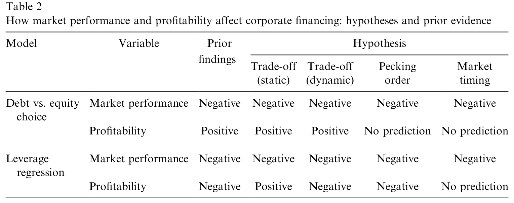
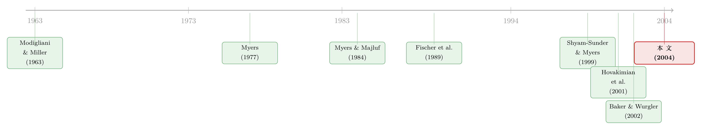

同一年里既借钱又发股：一把拆开「盈利—杠杆之谜」的钥匙
本文读的是 Hovakimian, Hovakimian & Tehranian (2004, Journal of Financial Economics)：作者把研究对象锁定在「同一财年里既发债、又发股」的双重发行 (dual issues) 公司身上。这群公司有一次罕见的、低成本「重置」资本结构的机会。利用它，作者把困扰文献多年的「盈利能力与杠杆负相关」之谜拆成了两半——结果发现，这个负相关在双重发行者身上消失了，从而把它归因于动态权衡 (dynamic trade-off) 而非优序融资 (pecking order)；与此同时，市场账面比 (market-to-book) 之所以重要，是因为它压低了目标杠杆，而近期高股票回报则只推高发股概率、不改变目标——这后一半，恰恰是市场择时 (market timing) 的指纹。
1 一个看似已经被回答、其实从未被回答的问题
资本结构的实证文献里，有一个事实稳得像一块石头：公司越赚钱，负债率反而越低。
这个负相关太稳健了，稳健到几乎每一篇用 Compustat 跑过杠杆回归的人都见过它。问题在于：它到底在说什么？
优序融资理论 (Myers and Majluf, 1984) 会很高兴地认领它：赚钱的公司有充足的内部现金，于是先用留存收益，不必外部融资，杠杆自然往下走；不赚钱的公司被迫借债，杠杆往上走。一句话，盈利与杠杆负相关，因为公司根本不在乎什么目标杠杆。
可权衡理论的拥护者会说：等一下，这个负相关我也能解释。Fischer, Heinkel and Zechner (1989) 那一类动态权衡模型告诉我们，调整资本结构是有成本的，所以公司不会时时刻刻把杠杆拉回目标——它会任由盈利和亏损在账上累积，让实际杠杆围着目标上下漂。结果就是：过去赚得多的公司当下偏低杠杆（因为利润累积冲低了负债率），过去亏损的公司当下偏高杠杆。于是，盈利与观测到的杠杆也负相关——但这跟目标杠杆毫无关系，纯粹是「偏离目标」这件事造成的。
你看，同一个负相关，两套完全不同的故事。一套说公司没有目标，一套说公司有目标只是懒得马上回去。Shyam-Sunder and Myers (1999) 据此宣称负相关是优序融资的铁证；Fama and French (2002) 则反驳说，他们看到了盈利变动会被杠杆「抵消」的迹象，暗示这其实是暂时性偏离。两边都拿同一张桌子上的牌，谁也说服不了谁。
这正是经典杠杆回归无能为力的地方：在一个以「不发行证券」的公司为主的样本里，动态权衡和优序融资对盈利系数的预测完全一样（都是负）。也就是说，这种检验没有功率 (no power) 去区分两者。问题不在数据不够多，而在于设计本身让两个假说退化成了同一个预测。
那么，有没有一种公司，能让这两套故事第一次给出不同的预测？
2 识别策略：把镜头对准「既借钱又发股」的人
作者的答案，简洁得近乎优雅：去看那些在同一财年里同时发债、又发股的公司。
为什么是它们？关键在于一句话——双重发行者拥有一次罕见的、低成本的「重置」机会。
想想看：一家公司若只想发债，发债额由它的融资需求决定，发完之后杠杆未必落在目标上；只想发股，同理。但一家同时能动用债和股两个工具的公司，等于手里握着两个旋钮，它完全可以把新债和新股的比例调到让发行后的杠杆正好回到目标。
于是，两套故事在这里第一次分道扬镳：
- 如果公司遵循动态权衡：它会借这次双发的机会，把过去因盈利累积造成的「偏离目标」一笔抹平。那么，发行后的杠杆应当贴近目标，而盈利与杠杆的负相关应当消失——因为造成负相关的那个「偏离目标」通道被堵死了。
- 如果公司遵循优序融资：它根本没有目标，也就没有动机去抵消盈利对杠杆的影响。那么，负相关应当照旧存在。
这是一个真正干净的、二选一的检验。把样本限制在双重发行者，等于手术刀式地切掉了「被动累积盈利与亏损」这条噪声通道，只留下公司主动选择的资本结构。（关于公司发证券到底是被动还是主动这桩公案，也可参见《公司一发证券股价就跌：是老板在「择时」，还是市场在「定价」？》。）
接着，一个自然的问题是：双重发行者会不会是一小撮无关紧要的边角料？恰恰相反。作者最醒目的一个发现是：双重发行的规模惊人地大——平均一次双发募集的资金，相当于发行前总资产的 61.5%，几乎是平均一次股权发行的两倍、平均一次债务发行的三倍多。换句话说，这是能实打实重塑一家公司资本结构的大事件，公司也因此更有可能在债与股的配比上「精打细算」。这恰好是把它们当作识别工具的前提。
3 数据：一张资产负债表，就能认出谁发了证券
作者沿用 MacKie-Mason (1990) 和 Hovakimian, Opler and Titman (2001) 的做法，用 Compustat（Industrial、Full Coverage、Research 三个文件）的年度公司数据来识别证券发行。判定规则朴素而稳健：
- 当净股权发行额 (net equity issued) 超过发行前账面总资产的
5%，记为一次股权发行； - 当净债务发行额 (net debt issued) 超过
5%，记为一次债务发行； - 同一财年里两者都发，就是一次双重发行。
这种「看资产负债表变动」的口径有个好处：它能把私募和公募的债与股一并纳入——这对债务尤其重要，因为私募债远比公募债常见。剔除金融业、剔除关键变量缺失、并在 1% 分位上做缩尾 (trimming) 之后，最终样本覆盖 1982–2000 年，包含：
1,689个双重发行的公司—年；10,216个（不伴随股权发行/回购的）纯债务发行；2,082个（不伴随债务发行/赎回的）纯股权发行。
观测单位是公司—发行年。这是理解后续所有回归的基础。
4 关键一步：用「发行后杠杆」隔离掉盈利累积
要把上面那套识别逻辑落到回归上，作者沿用杠杆回归的传统，估计：
$$ \text{Leverage}_t = a + b\,Z_{t-1} + x_t $$
这里 \(Z_{t-1}\) 是发行前一年的一组目标资本结构决定因素。但真正关键的一步，在于左边那个被解释变量怎么定义。作者没有用普通的年末杠杆，而是构造了一个发行后杠杆 (Post-Issue Leverage)：
直觉是什么？这个比率等于发行前的杠杆，加上「这次发行本身」引起的杠杆变化——它只反映发行这一动作，而不受发行与年末之间盈利累积造成的杠杆漂移影响。换句话说，作者用一个会计构造，把「公司主动选择的资本结构」和「被动累积的盈利亏损」彻底分了家。这一步看似只是分子分母的小把戏，却是整篇文章识别力的来源。
解释变量这边，市场表现用市场账面比与发行前一年的股票回报度量；盈利能力用资产回报率 (return on assets, ROA) 和净经营亏损结转 (net operating loss carryforwards, NOLC) 度量；控制变量则是公司规模、有形资产比率、研发支出、销售管理费用，以及按三位 SIC 行业中位数算的行业杠杆。标准误经过异方差和聚类 (clustering) 调整。
顺带一提，行业杠杆这个控制变量本身就是一个值得深挖的对象——行业到底如何塑造一家公司的资本结构，可参见《行业到底怎样塑造了一家公司的资本结构？》；而「资本结构会在同行间传染」这一点，则见《同行不是均匀的一团》。
5 反转：负相关，在双重发行者身上消失了
现在揭晓答案。作者在双重发行者样本上估计上面的回归，有六个变量显著：
- 发行后杠杆随市场账面比、销售费用、研发支出而下降；
- 随股票回报、有形资产、行业杠杆而上升。
而真正的主角——ROA 和 NOLC，双双不显著。
这就是那个反转：在普通样本里坚如磐石的「盈利—杠杆」负相关，一旦把镜头切到双重发行者，消失了。按前面的逻辑，这只能意味着一件事：双重发行者确实主动调整了新债与新股的配比，把过去盈利亏损累积造成的偏离一举抵消，让发行后的杠杆贴回了目标。盈利之所以在别处压低杠杆，不是因为它压低了目标，而是因为它制造了对目标的偏离——这正是动态权衡的预言，也与 Fama and French (2002) 看到的「抵消效应」遥相呼应。
那市场账面比呢？它在双重发行者身上依然显著为负。注意这一点的分量：双重发行者既然连债带股一起发，那种「因为觉得股价被低估、不愿发股」的择时顾虑就不太可能左右它们的发行后杠杆；再加上盈利结果已经表明它们贴近了目标——于是市场账面比的负号，最有可能来自它与目标杠杆的负相关。高成长（高市场账面比）公司，目标负债率本就该低（Myers, 1977；Stulz, 1990：高成长公司若负债过高，会被迫放弃有价值的投资项目，故目标杠杆应低）。
这两套预测的对照，作者在 Table 2 里列得清清楚楚——它把权衡（静态/动态）、优序融资、市场择时三套假说对「市场表现」和「盈利能力」分别给出的符号预测摆在一起，一眼就能看出哪一个变量能区分哪些假说。

Table 2: The predicted effects of market performance are the same under all of the
但还有一个小小的意外需要交代：股票回报的系数是正的，这有点出人意料（市场表现高，发行后杠杆反而更高？）。作者的进一步分析给出了线索：一旦把发行前市场账面比换成它的滞后一期，股票回报就变得不显著了。一个合理解释是市场择时：最近一轮异常高的回报，可能反映的是市场的错误定价而非真实成长机会的改善；在控制住市场账面比之后，刚经历过暴涨的公司，其目标杠杆反而应当更高（因为膨胀的市场账面比高估了成长性）。于是，控制住市场账面比后，目标杠杆与近期回报正相关。
把两块拼起来，这篇文章的核心图景就完整了：
市场账面比之所以重要，是因为它压低了目标杠杆（权衡）；而近期股票回报之所以重要，是因为公司择时发股——高回报推高发股概率，却不降低目标杠杆（择时）。盈利能力对发行后杠杆没有影响（动态权衡下的抵消）。三种力量，第一次被干净地拆开摆在了一起。
至于债 vs 股的发行选择那一面，作者也用同样的样本做了单变量与多变量分析，结论与既有文献一致并更进一步：债务相对股权发行的概率，随盈利能力上升、随市场账面比下降。再细拆会发现一个微妙之处——随盈利上升，发股的概率下降，但发债的概率并不随之上升。任何单一假说都解释不了全部盈利结果；作者因此提出一个混合假说 (hybrid hypothesis)：公司既有目标杠杆、又偏好内部融资，只在不盈利（因而往往过度负债）时才被迫外部融资，且更倾向发股而非发债。
6 文献脉络
把这条线索拉直了看，它其实是半个世纪资本结构争论的一个缩影。
最早，Modigliani and Miller (1963) 把税盾写进了资本结构，权衡理论的种子落地：负债有税收好处，也有财务困境成本，二者权衡出一个最优杠杆。随后 Myers (1977) 指出过度负债会引发投资不足，给「成长机会高→目标杠杆低」提供了微观基础。
接着，一个自然的对手出现了：Myers and Majluf (1984) 的优序融资理论干脆否认目标杠杆的存在，把一切归于信息不对称下的逆向选择成本。两条路线就此分庭抗礼。
然后，权衡阵营自己「进化」了一步：Fischer, Heinkel and Zechner (1989) 提出动态权衡——调整有成本，所以公司容忍杠杆围着目标漂。这一步看似温和，却埋下了日后所有混淆的根源：它让权衡也能「生产」出盈利—杠杆负相关。

于是到了世纪之交，争论进入白热化。Shyam-Sunder and Myers (1999) 用负相关力挺优序融资；Hovakimian, Opler and Titman (2001) 则发现高盈利虽对应低杠杆、却也对应更高的发债概率，更像动态权衡；Fama and French (2002) 看到了抵消效应；而 Baker and Wurgler (2002) 半路杀出，主张观测到的资本结构其实是历次择时股权市场的累积结果，两个传统理论谁都解释不了。
本文 (2004) 正是落在这一团乱麻的正中央。它没有再添一个新理论，而是找到了一个新的样本切口——双重发行者——让原本退化成同一预测的几套假说，第一次给出可区分的预测。它的贡献，是识别，而非理论。
7 评论与延伸（Q&A + 研究方向）
(a) 几个可能的疑问
Q：双重发行者会不会是一群「不一样」的公司，从而样本选择偏误污染了结论？
这是最该担心的问题。双重发行者必然是同时具备发债和发股两种能力、且融资需求很大的公司（平均双发规模达发行前资产的
61.5%）——它们大概率比一般公司更大、更受市场关注。作者的逻辑链条是「这群公司有能力把杠杆调回目标」，所以盈利系数消失才说明它们确实这么做了。但若这群公司在别的维度上系统性不同，外部效度（推广到一般公司）就要打折扣。文章本质上是用一个特殊子样本去识别一个一般机制，读者应把结论理解为「当公司有机会重置时，它们的行为符合动态权衡」，而非「所有公司都在做动态权衡」。
Q：盈利系数「不显著」，凭什么就等于「公司主动抵消了偏离」？不显著也可能只是噪声大、功率低。
公允地说，「不显著」本身是弱证据——零假设无法被证明。但作者的设计让这个零结果有了方向性含义：在普通样本里这个系数稳健地为负，切到双重发行者后它归零，这种「从显著负到不显著」的对比比单看一个不显著系数更有说服力。当然，更强的检验应该是直接看双重发行者的发行后杠杆是否统计上等于某个独立估计的目标，而不仅是看盈利系数消失。
Q：市场账面比为负，到底是「低目标杠杆」（权衡），还是「管理层趁股价高发股」（择时）？这两个不是一直分不开吗？
正是为了分开它们，作者才用双重发行者。直觉是：择时顾虑（怕股价被低估而不愿发股）主要影响发不发股；但双重发行者连债带股一起发，发股的择时摩擦被中和了。既然如此，它们发行后杠杆里残留的市场账面比负号，就更可能来自目标杠杆而非择时。这是个聪明的论证，但它依赖「双发能中和择时」这个假设——见下一问。
Q：「双重发行能控制住市场择时」这个核心假设，有没有被直接验证？
作者在脚注里给了一个旁证：股权发行者与双重发行者在发行年前后的市场账面比中位数时间序列没有显著差异，说明两类公司的择时程度相当，从而在「双发 vs 纯股发」回归里择时效应应当被差掉。这是支持性的，但终究是间接的；若发行规模也被择时（不只择时机），论证还需进一步控制发行规模。
Q：为什么股票回报的系数是正的，这难道不和「市场表现高→杠杆低」的常识相悖？
表面相悖，实则点睛。一旦用滞后一期的市场账面比替换，回报系数就消失，说明它捕捉的是短期错误定价而非真实成长。控制住市场账面比后，刚暴涨过的公司其膨胀的市场账面比高估了成长性，对应的真实目标杠杆反而更高——所以回报系数转正。这其实是识别出择时成分的副产品。
Q：那 NOLC（净经营亏损结转）为什么也不显著？它不是非债务税盾的代理吗？
NOLC 既可代理过去的亏损累积（盈利能力的一面），也可代理非债务税盾（DeAngelo and Masulis, 1980：非债务税盾降低负债的税收优势，从而压低目标杠杆）。它在双重发行者样本里不显著，与 ROA 不显著是同一逻辑的两面：盈利/亏损累积造成的偏离，被双发主动抵消掉了。
(b) 几个可能的研究问题与提案
1. 把这套「重置识别」搬到公司债市场，检验信用市场的目标杠杆
【经济故事】本文的杠杆是账面口径。但债权人真正在意的是信用风险意义上的杠杆。如果双重发行者真在重置资本结构，那么它们发行后的信用利差应当向「目标信用质量」收敛——盈利对利差的影响也应当在双发者身上减弱。这能把目标资本结构假说从「会计杠杆」推进到「市场化的信用定价」。 【可行性】中。需要把
Compustat的双重发行样本匹配到TRACE（2002 年后）或Mergent FISD的债券层面利差，识别上沿用本文的子样本对比。难点在TRACE起点晚于本文样本（1982–2000），需重新界定样本期；二级市场流动性也会污染利差。
2. 外资持有人是否改变了「重置」的能力与意愿？
【经济故事】能否低成本地同时发债发股，部分取决于公司能触达的资本供给。外资股东/债权人占比高的公司，融资渠道更宽，理论上更有能力做这种「双发重置」。可以检验：在外资持有比例高的公司里，盈利—杠杆负相关在双发样本中消失得更彻底吗？这把「目标杠杆」与「资本供给的全球化」连了起来。 【可行性】中。需
FactSet/Thomson的机构与跨境持股数据，匹配到发行样本。识别上可借助指数纳入（如 MSCI 可投资度变化）作为外资准入的外生冲击。挑战是外资持股本身内生于公司质量。
3. 双重发行者的「重置」会被流动性环境放大或抑制吗？
【经济故事】调整资本结构有成本，而这个成本随市场流动性起伏。在债市或股市流动性枯竭时（如危机期），即使想重置也可能发不出去。可以检验：盈利系数在双发者身上的「消失」程度，是否随发行时点的市场流动性而变——流动性差时，抵消不充分，负相关部分回归。 【可行性】中高。本文样本横跨 1982–2000，含 1998 年的流动性事件；可叠加公司债/股票流动性指标（如换手率、买卖价差）。识别可用市场层面的流动性冲击作为外生变动。与《市场快「干涸」的那一刻：股与债的流动性，原来听的是同一个人》的主题天然衔接。
4. 发行的「规模」是否也被择时，而不仅是时机？
【经济故事】本文假设双发中和了择时机的成分，但若管理层不仅择何时发、还择发多少（股价高时多发股），那么仅控制「是否双发」不够，必须控制发行规模。把发行规模内生化，能更干净地分离目标与择时。 【可行性】高。所需变量（净债务/净股权发行额）本文已全部构造，只需把发行规模作为内生选择重新建模，或在回归中加入规模交互项。doable，且是对原文识别假设的直接压力测试。
8 参考文献
我的判断：这是一篇以设计取胜的论文。它的贡献不在提出新理论，而在找到一个让旧理论第一次「可证伪地相互区分」的样本切口——双重发行者那次低成本的资本结构重置，把「主动选择」与「被动累积」干净地分了家。盈利系数从稳健为负到归于不显著的对比，是全文最漂亮的一笔。
但识别的软肋也清楚：其一，双重发行者是一个自选择的特殊群体，结论的外部效度有限，「公司有机会时会做动态权衡」不等于「公司普遍在做动态权衡」；其二，核心结论建立在一个零结果（盈利系数不显著）之上，更稳的做法是直接检验发行后杠杆是否统计上等于一个独立估计的目标；其三，「双发能中和择时」这一关键假设只有间接旁证。后续我最想看到的，是把这套重置逻辑搬到信用市场——用发行后的信用利差、而非账面杠杆，去验证目标资本结构是否真的「被定了价」；以及把发行规模内生化，直面「连规模一起择时」这个最难缠的对手。
- Baker, M., Wurgler, J. (2002). Market timing and capital structure. Journal of Finance 57, 1–32.
- DeAngelo, H., Masulis, R. (1980). Optimal capital structure under corporate and personal taxation. Journal of Financial Economics 8, 3–29.
- Fama, E., French, K. (2002). Testing trade-off and pecking order predictions about dividends and debt. Review of Financial Studies 15, 1–34.
- Fischer, E., Heinkel, R., Zechner, J. (1989). Dynamic capital structure choice: theory and tests. Journal of Finance 44, 19–40.
- Hovakimian, A., Opler, T., Titman, S. (2001). The debt–equity choice. Journal of Financial and Quantitative Analysis 36, 1–24.
- MacKie-Mason, J. (1990). Do firms care who provides their financing? In: Asymmetric Information, Corporate Finance, and Investment. University of Chicago Press, pp. 63–104.
- Modigliani, F., Miller, M. (1963). Corporate income taxes and the cost of capital: a correction. American Economic Review 53, 433–443.
- Myers, S. (1977). Determinants of corporate borrowing. Journal of Financial Economics 5, 147–175.
- Myers, S., Majluf, N. (1984). Corporate financing and investment decisions when firms have information that investors do not have. Journal of Financial Economics 13, 187–221.
- Shyam-Sunder, L., Myers, S. (1999). Testing static trade-off against pecking order models of capital structure. Journal of Financial Economics 51, 219–244.
- Stulz, R. (1990). Managerial discretion and optimal financing policies. Journal of Financial Economics 26, 3–28.
- Titman, S., Wessels, R. (1988). The determinants of capital structure choice. Journal of Finance 43, 1–18.